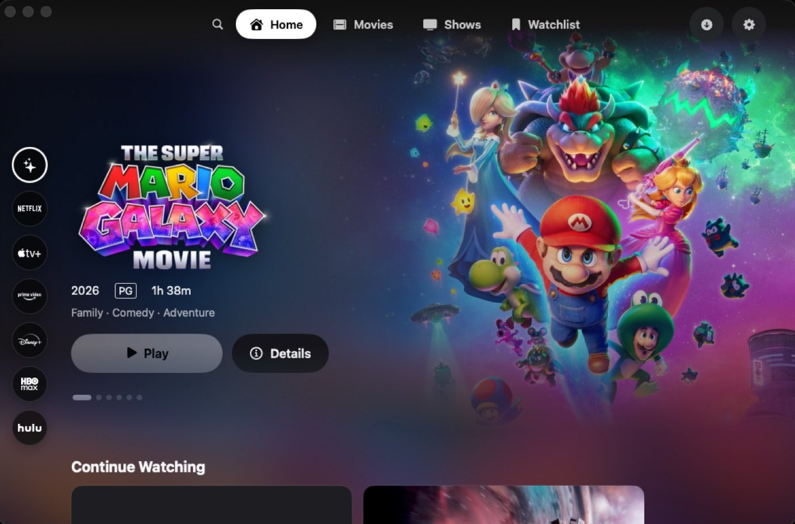
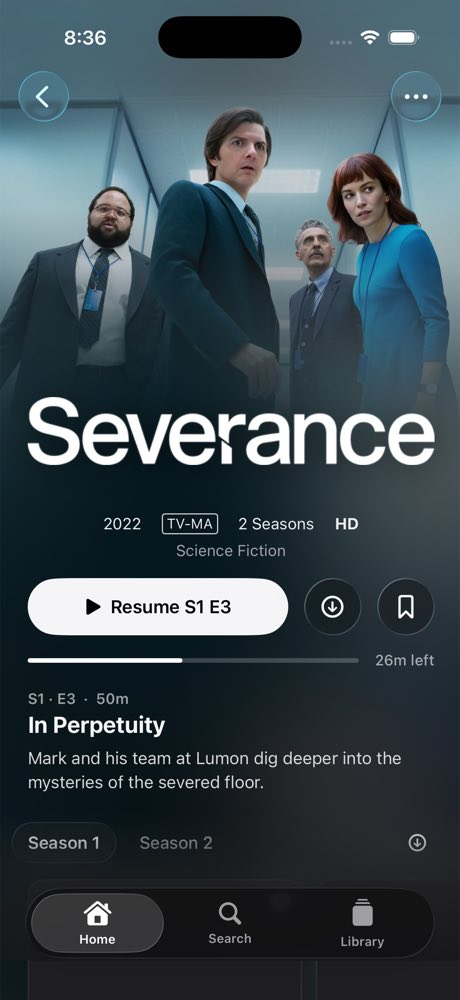
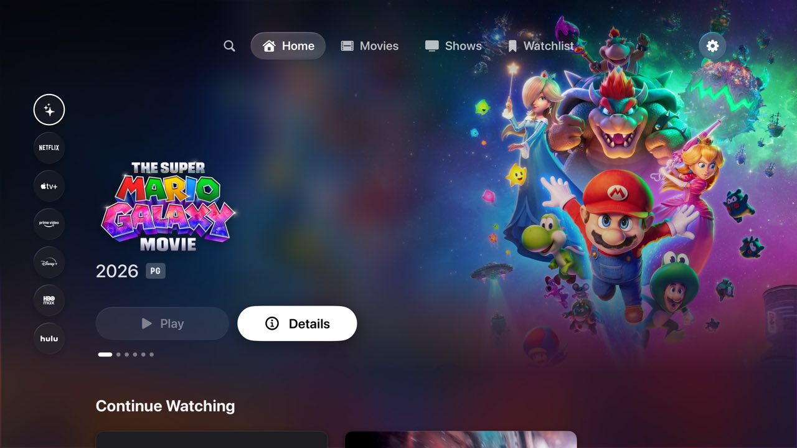

Watch your Plex the way it was shot.
Astra is a Plex player for iPhone, Mac and Apple TV. It plays the file on your server as it is. No transcoding, no quality drop.


Astra is a Plex player for iPhone, Mac and Apple TV. It plays the file on your server as it is. No transcoding, no quality drop.


Everything goes through mpv. Your 80 GB remux plays as an 80 GB remux.
Dolby Vision, HDR10 and Atmos show up on the title page and play as mastered.
Progress syncs through Plex. Stop on the TV, finish on the train.
See what's popular on Netflix, Disney+ and the rest, then play the copy on your server.
Take movies and episodes with you on iPhone and Mac, in the original file.
A channel guide with favourites and search, kept apart from your library.
Year, rating, runtime and formats on one line. Press Play and it starts where you left off.


Built for the Siri Remote. Same Home, same title pages, same player.
Signed app. Updates itself. macOS 26 or later.
Download .dmgBeta through TestFlight. iOS 26 or later.
Open TestFlightSame TestFlight link. tvOS 26 or later.
Open TestFlight